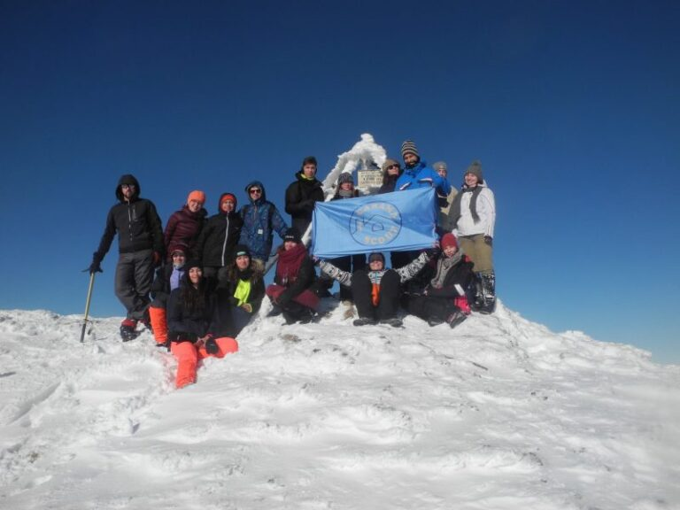

Și urcăm… și urcăm… se înserează… noi tot urcăm…

Acum o lună, cercetaşii de la Cabana Scout au avut parte de cea mai spectaculoasă ieşire de iarnă din câte s-au petrecut vreodată în centrul nostru local. Zăpadă din belşug, peisaje de poveste, trasee de hike mirifice şi în plus o atmosferă plină de bună dipoziţie au fost reţeta cu care SCOUTocitul IErnii 2017 va rămâne în amintirea participanţior.
Ana-Maria, Cecilia şi Alex (a.k.a. Zaha / Aron Crimson) s-au arătat dispuşi să rememereze acele zile şi aşa se face că astăzi reuşim să vă prezentăm din 3 perspective aventurile ieşirii din această iarnă.
“am învățat să facem focul în sobă şi să tăiem lemne”
În vacanța intersemestrială, mai exact la începutul lunii februarie, am avut parte de o experiență de neuitat, alături de oameni speciali.
Distracția a început dis-de-dimineața, în primul tren, spre Braşov, majoritatea jucând-ne diferite jocuri amuzante şi interactive, bineînțeles, iar alții dormind. Timpul a trecut repede, am ajuns în gara la Braşov, unde am mâncat repede ceva şi apoi ne-am pregătit pentru ceea ce avea să urmeze. Apoi am mers cu alt tren unde iarăși ne-am jucat, dar de data asta cărți, masa de joc fiind unul dintre rucsaci J. Am ajuns apoi într-un orăşel nu foarte populat, dar cu oameni foarte drăguți şi amabili care ne-au ajutat să ne orientăm şi să ajungem unde trebuia. Am luat apoi un autobuz ca să trecem prin mai multe sătucuri de munte. Am stat cam înghesuiți, dar nu asta a contat. Ce m-a uimit foarte mult a fost că fiecare casa avea câte o cruce pe acoperiș, iar asta nu vezi prea des în București. Apoi, la începutul traseului mi-am luat primele mele 5 geno pentru că nu am fost atentă la GMK, şi totodată prima căzătură pentru că m-am dezechilibrat din cauza rucsacului 😂. în fine, traseul a fost ușor şi cu toate că am căzut de câteva ori, restul s-au oferit să mă ajute să continui. Ce ne-a încurcat puțin a fost faptul că ne-a prins întunericul pe traseu, dar totuși am ajuns cu toții teferi şi nevătămați la cabană, unde am mâncat şi apoi ne-am odihnit. Pentru mine prima noapte a fost de coșmar pentru că am cam înghețat din cauza frigului, dar asta nu schimbă cu nimic părerea mea despre şcoala de iarnă.
A doua zi, exploratorii au plecat într-un scurt hike („Pa, Ana”! 😂😂) iar noi, temerarii, am rămas la cabană, ne-am jucat în zăpadă, am învățat să facem focul în sobă şi să tăiem lemne şi am mai învățat cum să ne comportăm cu un copil mic căruia îi era dor de familia sa. Când s-a lăsat seara, am rămas uimita de frumusețea lunii care strălucea pe Piatra Singuratica, reflectându-se apoi în zăpadă.
În următoarea zi, deja era cu totul altceva, toata lumea se înțelegea cu toata lumea. Era o super atmosfera. Noi, temerarii am făcut 3 hike-uri scurte în jurul cabanei şi cu toate astea am avut parte de priveliști şi panorame de care sigur ne vom aminti şi peste câțiva ani. Ultima cină pe care am avut-o la cabana a fost răsfăț, pe lângă celelalte: am mâncat carnați. Te ungeau pe suflet!😂 Apoi seara am ascultat o poveste tristă, care recunosc, m-a cam făcut să plâng; apoi am discutat alături de exploratori ce înseamnă mai exact cercetășia şi ce scop are ea în viată noastră.
În ultima zi ne-am pregătit de plecare, unora dintre noi părându-le rău că pleacă. Ne-am organizat cam greu să plecăm, având în vedere că am lăsat la cabana curat lună, deoarece am cam supărat-o pe doamna cabaniera. La întoarcere, a fost un drum scurt şi lejer, am avut doar de coborât, iar noi cântând toate tipurile de muzica, de la desene animate până la melodii rock vechi. A fost un drum super tare. în primul tren ne-am odihnit, am mâncat supă la plic (fără apa 😂) şi am admirat de pe geamul trenului munții din depărtare, gândind-mă la ce minuni poate face natura🗻. Apoi în trenul Braşov-Bucureşti ne am jucat ceea ce am așteptat tot timpul – werewolf, un super joc de îndemânare şi noroc. Afară era întuneric, şi asta a făcut ca atmosfera din tren să fie şi mai buna pentru jocul pe care îl jucam.
Am ajuns în București, ne am îmbrățișat cu toții, am făcut o poza de grup şi apoi ne am despărțit unii de alții ducând-ne fiecare la casa lui. Toata noaptea am stat cu gândul la ce experiență minunată am avut şi că am avut ocazia să stau cu oamenii atât de iubitori şi minunați în jurul meu.
Mi-a plăcut la nebunie!
Ana-Maria Radu
E frig… Faceţi focul!
În dimineaţa de 8 februarie, precum este obiceiul, ne adunăm rând pe rând la Gara de Nord pentru a pleca în Şcoala de Iarnă, deci o altă şansă de a avea parte de noi aventuri, momente inedite petrecute împreună şi obişnuitele replici comice pe care le aşteptam cu nerăbdare.
Entuziasmaţi peste masură, urcăm în tren la 06:20 fără bilete, dar cu zâmbetul pe buze, urmând să rezolvăm aceasta problemă pe parcurs… 😉 şi începem să călătorim în stil cercetăşesc prin jocuri ce ne-au pus nervii şi răbdarea la încercare, dar mai ales isteţimea. Ajunşi în gara Braşovului, luăm biletele spre următoarea destinație şi mergem să cumpărăm mâncarea, urcându-ne apoi iar in tren, cu destinaţia Izvorul Olt, la care ajungem în jur de ora 15:00. Cum drumul nu s-a terminat, ne urcăm într-o maşină care ne lasă la poalele muntelui, de unde trebuie să urcăm cu propriile puteri, dar nu înainte de a ni se povesti cadrul simbolic al ieşirii şi de a ne crea porecle reprezentative.
Şi urcăm… şi urcăm… alunecăm pe gheaţă… şi urcăm… se înserează… noi tot urcăm, iar după câteva ore întrezărim gardul cabanei Piatra Singuratică şi intrăm fericiţi în camera unde urma să luăm masa. Ne instalăm imediat şi la fel de repede se umple şi spaţiul pentru uscat haine şi începe distracţia cu tăiatul lemnelor şi făcutul focului.
Dimineaţa următoare suntem treziţi de frigul care nu uită să-şi facă simţită prezenţa. După micul dejun, sacii de dormit sunt ocupaţi din nou, iar propunerea unui hike prin zăpadă până pe Vârful Ascuţit ne face să închidem mai bine fermoarul sacului. Dar cum nu putem refuza oferta, ne pregătim şi deîndată suntem captivaţi de peisajul hibernal al iernii şi fiecare-şi testează precizia de a călca pe urmele celuilalt şi vechea poveste: ajutarea câte unui suflet nevinovat să iasă din zăpada prea mare pe alocuri. Deşi ne-am propus să ajungem pe Vârful Ascuţit… ne-am oprit în apropiere şi de acolo am luat drumul înapoi mult mai rapid pe derdeluş, întâlnind din când în când câte o piatră în calea noastră.. ;).
Seara a avut loc o discuţie despre tăieturi de la cele în hârtie la plăgi, unde am aflat ‘’lucruri noi’’ despre betadină şi despre ce să faci dacă îţi intră un cui in picior. Noaptea am stat cu rândul ca să întreţinem focul din sobă. Privind cum lemnele ‘’bârfesc‘’ de zor dând căldură în cameră, râsetele nu s-au oprit pentru că în simţul umorului, că îl ai sau nu, este de ajuns să alături câteva cuvinte fără sens ca să se râdă ore bune… Fie asta sau poţi vorbi în somn! Amândouă merg cam pe acelaşi principiu şi au acelaşi rezultat! ;).
Ziua următoare am pornit din nou într-o expediţie pe munte până pe Hăşmaşul Mare – 1792m altitudine – de unde am admirat caprele negre şi unde priveliştea era parcă ireală datorită munţilor ce ne înconjurau. După multe poze, la întoarcere am asistat şi la o lecţie de geografie care ne a dezvăluit mai multe din tainele munţilor şi a locului.
Seara a urmat discuţia despre cercetăşie formată din întrebări puse noilor membrii ai grupului, de unde am reținut scopul cercetăşiei şi mai mult, importanţa ei în viaţa unui adolescent. Seara a venit împreuna cu frigul, iar echipa responsabilă cu tăiatul lemnelor şi-a început activitatea precum şi setarea alarmelor din 30 in 30 de ,minute pentru a nu lăsa focul să se stingă.
Ultima dimineaţă ne-am petrecut-o strângandu-ne lucrurile şi luându-ne la revedere de la gazdă, dar nu înainte ca cel curajos care au mers după apă în seara precedentă să fie premiat cu un tricou cu emblema Pietrei Singuratice.
Am pornit spre casă fredonând melodii şi ajutându-ne între noi până la maşină şi de acolo am luat trenul spre Braşov şi mai apoi spre Bucureşti.
Cam aşa a fost în Şcoala de Iarnă 2017! Patru zile în care am redescoperit iarna alături de prieteni şi prin întâmplări hazlii ce nu se vor uita curând.
Teme Cecilia-Cătălina
“prima cabană montană la care am stat vreodată şi peste noapte”
Zaha, aspirant al Cabanei Scout, gata să vă povestesc despre SCOUTocitul Iernii 2k17 :D…
În data de 8 februarie, am avut ocazia de a participa la primul meu hike alături de cercetaşii de la Cabana Scout. M-am trezit la ora 5 dimineaţa, ca orice om “normal”, şi am plecat spre Gara de Nord pentru a mă întâlnii cu restul patrulei la ora 6. Toţi cu chef de drum şi voie bună, alţii mai fără chef, dar tot cu voie bună, am purces spre peron în paşi vioi la ora 6:23, încercând să prindem trenul de 6:24 (off trezitu’ ăsta la timp). Odată urcaţi în tren şi după ce ne-am mai revigorat, a urmat drumul către Braşov, unde am făcut escală aşteptând trenul spre Izvorul Oltului, Harghita. Plictiseala nu şi-a avut locul pe parcursul călătoriei, trombonul şi diversele jocuri ţinându-ne ocupaţi şi fericiţi (inclusiv naşul) (^-^).
De la Izvorul Oltului, am luat un microbuz, mai mult sau mai puţin plin (mai mult) şi am mers cu el până în Bălan, de unde am început traseul spre cabana Piatra Singuratică.
…şi de aici începe practic hike-ul (mai mult sau mai puţin). Sunt sigur că peisajul de pe traseu era unul minunat, însă faptul că era noapte, viscol şi toţi eram destul de obosiţi, m-a cam făcut să nu îl observ L. Trebuie să recunosc, am încercat pe cât posibil să mă pregătesc psihic de urcare, însă problema a stat în mare parte la fizic… Noroc cu diversele încurajări ale camarazilor mei (unele mai frumoase…altele mai puţin frumoase), am reuşit, în cele din urmă, să ajungem la cabană în jurul orei 18:30~19:00. Fiind prima cabană montană la care am stat vreodată şi peste noapte, mă aşteptam la o ciocolată caldă, la o sobă aprinsă şi călduroasă… ce am primit a fost un buştean dubios care a fost laitmotivul glumelor noastre. După o cană de ceai cald ne-am băgat cu toţii la somn.
A două zi ne-am trezit pe la 7:30 şi după ce am luat un mic dejun copios, ne-am echipat şi am plecat la drum spre Vf. Ascuţit. Priveliştea era minunată, iar zăpada proaspătă era numai bună să te arunci sau să înoţi în ea (sau să te scufunzi :D) Am ajuns în cele din urmă pe un platou, unde ne-am bucurat de aerul curat şi am făcut o poză de grup. Coborârea a fost însă punctul culminant al zilei, folosind cărarea făcută de noi la urcare pe post de derdeluş. Ajunşi înapoi la cabană, Adi ne-a dat câteva sarcini pentru zilele ce au urmat, o parte din noi tăind lemne, alţii la bucătărie, iar restul, incluzându-mă şi pe mine, la izvor după apă.
A treia zi a fost cea mai palpitantă. După o vizită matinală la izvor, pentru a-mi revigora camarazii, am plecat cu toţii către vârful Hăşmaşul Mare, situat la 1792 de m. Urcarea, una frumoasă, presărată cu poze haioase, un peisaj ce îţi taie răsuflarea (pentru că ştii, suntem la înălţime, it’s funny…) dar şi un grup de capre de munte. Restul serii a fost unul destul de calm, discutând cu toţii la cabană despre diverse mărunțișuri mărețe…
A patra zi a constituit momentul plecării noastre de la cabană. După o poză de grup şi un rămas bun de la locul în care tăiam lemne cu spor şi de unde luam apă proaspătă în fiecare dimineaţă, am plecat la drum către aşa zisa civilizaţie. Drumul a fost unul interesant, făcând multe glume şi urlând în vârf de munte intro-ul din celebrul serial de desene animate “Phineas şi Ferb”, dar şi o selecţie de capodopere clasice precum “Dragostea din tei” şi “Never Gonna Give You Up”.
Venind acasă, obosit, am avut prilejul de a le povesti alor mei aventurile pe care le-am trăit, realizând astfel că deşi a fost foarte greu şi îmi ziceam în gând “că abia aştept să ajung acasă”, de fapt, aştept cu nerăbdare următoarea evadare din cotidian alături de patrula mea mirobolantă de la Cabana Scout.
P.S. încă retrăiesc flash back-uri când aud pe cineva că are nevoie de puţină apă… X_X
Alexandru Zaharescu